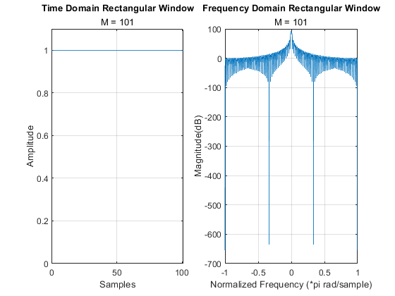

Digital Signal Processing MATLAB HW1 - q3
Professor: Dr. Sheikhzadeh Author: Maryam Barazande - 9723016 E-mail: maryambarazande7@gmail.com University: Amirkabir University of Technology
Contents
Clear recent data
clear; close all; clc;
Window
M1 = 10; M2 = 50; M3 = 101; %%Plots of Rectangular Window for various values of M figure(1); myPlot(1,M1); figure(2); myPlot(1,M2); figure(3); myPlot(1,M3); %%Plots of Bartlett Window for various values of M figure(4); myPlot(2,M1); figure(5); myPlot(2,M2); figure(6); myPlot(2,M3); %%Plots of Hanning Window for various values of M figure(7); myPlot(3,M1); figure(8); myPlot(3,M2); figure(9); myPlot(3,M3); %%Plots of Hamming Window for various values of M figure(10); myPlot(4,M1); figure(11); myPlot(4,M2); figure(12); myPlot(4,M3); %%Plots of Blackman Window for various values of M figure(13); myPlot(5,M1); figure(14); myPlot(5,M2); figure(15); myPlot(5,M3);
Functions
function R = myRect(M) % Rectangular Window of Length M n=0:M; R=ones(1,length(n)); end function B = myBartlett(N) % Bartlett Window of Lenrth N n = 1:N; B = zeros(1,length(n)+1); for n = 1 : N if (n <= ((N)/2)) B(n) = 2 *(n-1) /N ; end if ( n > (N)/2 ) B(n) = 2 - 2 *(n-1) /N; end end end function C = myHanning(M) % Hanning Window of Lenrth N n = 1:M; C = zeros(1,length(n)+1); for n = 1:length(n) C(n) = 0.5 *(1- cos(2*pi * (n-1)/(M-1))); end end function H = myHamming(M) % Hamming Window of Lenrth N n = 1:M; H = zeros(1,length(n)+1); for n = 1:length(n)+1 H(n) = (0.54- 0.46* cos(2*pi * (n-1)/(M-1))); end end function BL = myBlackman(M) % Blackman Window of Lenrth N n = 1:M; BL = zeros(1,length(n)+1); for n = 1:length(n)+1 BL(n)=(0.42- 0.5* cos(2*pi *(n-1)/(M-1)) +0.08* cos(4*pi*(n-1)/(M-1))); end end function myPlot(c,M1) t = 0:M1 ; switch c case 1 %Plot Rectangular Window R = myRect(M1); subplot(1,2,1); plot(t, R); grid on; xlim([0,M1]); ylim([0, 1.1]); xlabel("Samples"); ylabel("Amplitude"); title("Time Domain Rectangular Window", "M = "+M1); WR = linspace(-pi,pi,1024); subplot(1,2,2); % [hR1, wR1] = freqz(R,1); HR = freqz(R,1,WR); % plot(wR1/pi,20*log10(abs(hR1))); plot(WR/pi,20*log(abs(HR))); grid on; xlabel("Normalized Frequency (*pi rad/sample)"); ylabel("Magnitude(dB)"); title("Frequency Domain Rectangular Window", "M = "+M1); case 2 %Plot Bartlett Window Ba = myBartlett(M1); subplot(1,2,1); plot(t, Ba); grid on; xlim([0,M1]); ylim([0, 1.1]); xlabel("Samples"); ylabel("Amplitude"); title("Time Domain Bartlett Window","M = "+M1); WBa = linspace(-pi,pi,1024); % [hBa, wBa] = freqz(Ba,1); HBa = freqz(Ba,1,WBa); subplot(1,2,2); % plot(wBa/pi,20*log10(abs(hBa))); plot(WBa/pi,20*log(abs(HBa))); grid on; xlabel("Normalized Frequency (*pi rad/sample)"); ylabel("Magnitude(dB)"); title("Frequency Domain Bartlett Window","M = "+M1); case 3 %Plot Hanning Window C = myHanning(M1); subplot(1,2,1); plot(t, C); grid on; xlim([0,M1]); ylim([0, 1.1]); xlabel("Samples"); ylabel("Amplitude"); title("Time Domain Hanning Window","M = "+M1); WC = linspace(-pi,pi,1024); % [hC, wC] = freqz(C,1); HC = freqz(C,1,WC); subplot(1,2,2); % plot(wC/pi,20*log10(abs(hC))); plot(WC/pi,20*log(abs(HC))); grid on; xlabel("Normalized Frequency (*pi rad/sample)"); ylabel("Magnitude(dB)"); title("Frequency Domain Hanning Window","M = "+M1); case 4 %Plot Hamming Window H = myHamming(M1); subplot(1,2,1); plot(t, H); grid on; xlim([0,M1]); ylim([0, 1.1]); xlabel("Samples"); ylabel("Amplitude"); title("Time Domain Hamming Window","M = "+M1); WH = linspace(-pi,pi,1024); % [hH, wH] = freqz(H,1); HH = freqz(H,1,WH); subplot(1,2,2); % plot(wH/pi,20*log10(abs(hH))); plot(WH/pi,20*log(abs(HH))); grid on; xlabel("Normalized Frequency (*pi rad/sample)"); ylabel("Magnitude(dB)"); title("Frequency Domain Hamming Window","M = "+M1); case 5 %Plot Blackman Window BL = myBlackman(M1); subplot(1,2,1); plot(t, BL); grid on; xlim([0,M1]); ylim([0, 1.1]); xlabel("Samples"); ylabel("Amplitude"); title("Time Domain Blackman Window","M = "+M1); WBL = linspace(-pi,pi,1024); % [hBL, wBL] = freqz(BL,1); HBL = freqz(BL,1,WBL); subplot(1,2,2); % plot(wBL/pi,20*log10(abs(hBL))); plot(WBL/pi,20*log(abs(HBL))); grid on; xlabel("Normalized Frequency (*pi rad/sample)"); ylabel("Magnitude(dB)"); title("Frequency Domain Hamming Window","M = "+M1); end end